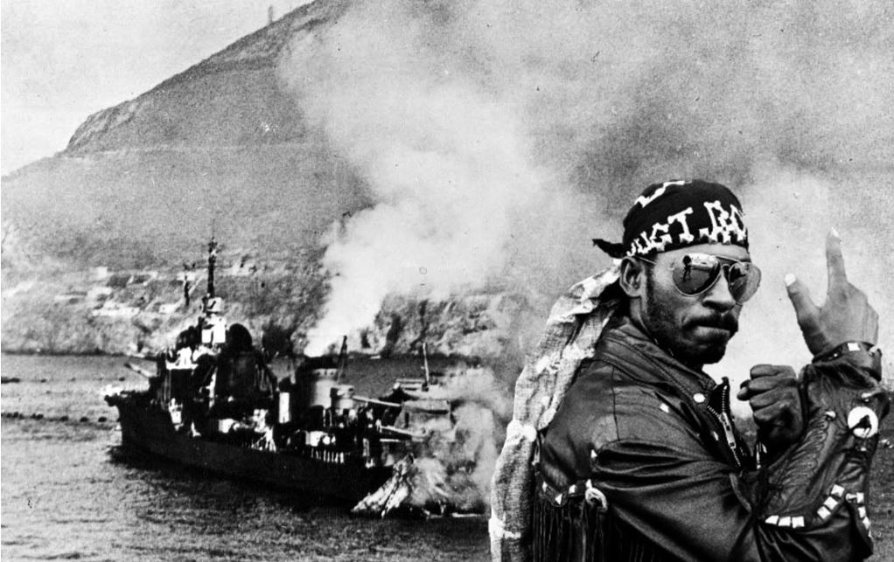
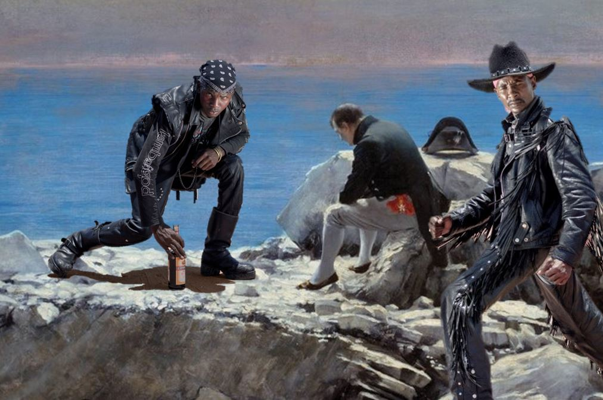

War Metal Band “Run BMC” Insists They’re Apolitical “History Nerds” Despite Overwhelmingly Anti-French Lyrics
By Konan Diallo, May 16th, 2022

Run BMC frontman Joachim Bakayoko in the music video for Preemptive Strike, a song about the attack on French Naval Forces at Mers El Kébir. The background image is the French destroyer Mogador, which was heavily damaged in the attack. Image Credits Courtesy of Résistance Records Abidjan
Abidjan - No strangers to controversy, the Cocody based war metal band “Run BMC” reiterated in an interview on the talk show L’Heure Michelle that they are not a political band and insist that their songs are purely historical. The statement comes after a documentary aired on France 24 that asserted the band is vehemently anti-French in both tone and lyrical content.
In the documentary, Run BMC is accused of creating songs whose lyrics focus on and celebrate French military defeats. Run BMC, which BMC stands for “Baise Macron dans le Cul”, is famous for songs such as “Preemptive Strike”, a song that combines overdriven guitar chords with the gory details of French sailors getting blown up by the English at Mers El Kébir, “Fall of an Empire”, a celebratory anthem about African independence, and “White Flag”, a song about Napoleon that is oddly reminiscent of the “Friends” theme song. The documentary focuses heavily on the lyrical content it deems problematic and anti-French, saying the band could ruin French-Ivoirian relations and calls for the band to tone down their rhetoric.
Here are some of the lyrics from the song White Flag:
So no one told you war was gonna be this way
👏👏👏👏
Your fat and old, you're broke, your Army's DOA
It's like your horse is stuck in three-foot snow
and it's never been your loot, your fight, your war, or even your cause
But,
I'll be there for you (My name is dysentery)
I'll be there for you (St. Helena ain't so bad)
I'll be there for you (Invading Russia in the winter is a very bad idea, dumbass)

Guitarist and Bassist Christophe Keita (left) and Paul Soro (right) taunt a distraught Napoleon with Jojo poses on Sainte-Hélène in the music video for White Flag.
The documentary also uses comments on their YouTube videos as an example that the band is inciting anti-French sentiment, showing comments such as “France ought to acknowledge what they’ve done”, and “This song is a great anti-colonial banger!”. The documentary then goes on to suggest that the Ivoirian pilots who killed 9 French troops in 2004 were die-hard fans of Run BMC.
Frontman Joachim Bakayoko hit back on air, saying that while Run BMC does not condone their music being used for political or violent purposes, “it’s still pretty fun to make fun of France for their military defeats.”